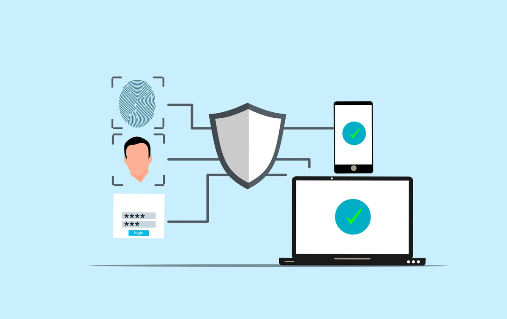

Aunque el tema trata principalmente de los medios informáticos, en la seguridad, lo más importante es proteger a las personas. Los daños a la máquina no dejan de ser daños materiales, pero los daños causados a las personas permanecen en el tiempo y trascienden a otros aspectos de la vida.
Debemos tener en cuenta que la seguridad hacia las personas abarca muchas otras áreas, como por ejemplo la seguridad postural frente al ordenador o el riesgo de adicciones al ordenador.
Todos somos vulnerables, y nuestra vulnerabilidad aumenta cuanto más nos exponemos. En Internet nos mostramos a los demás en mayor o menor medida. Entre los peligros que pueden amenazarnos están:
• El acceso involuntario a información ilegal o perjudicial.
• La suplantación de la identidad, los robos y las estafas. Por ejemplo, el phishing es un delito informático de estafa que consiste en adquirir información de un usuario (datos bancarios, claves, etc.) a través de técnicas de engaño para usarlos de forma fraudulenta.
• La pérdida de nuestra intimidad o el perjuicio a nuestra identidad o imagen.
• El ciberbullying o ciberacoso, que es un tipo de acoso que consiste en amenazas, chantajes, etc., entre iguales a través de Internet, el teléfono móvil o los videojuegos.
